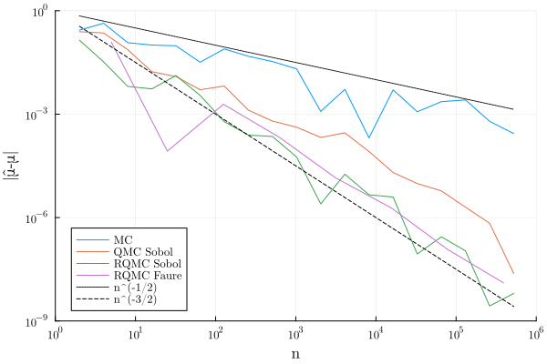

QuasiMonteCarlo.jl: Quasi-Monte Carlo (QMC) Samples Made Easy
QuasiMonteCarlo.jl is a lightweight package for generating Quasi-Monte Carlo (QMC) samples using various different methods.
Installation
To install QuasiMonteCarlo.jl, use the Julia package manager:
using Pkg
Pkg.add("QuasiMonteCarlo")Get Started
Basic API
using QuasiMonteCarlo, Distributions
lb = [0.1, -0.5]
ub = [1.0, 20.0]
n = 5
d = 2
s = QuasiMonteCarlo.sample(n, lb, ub, GridSample())
s = QuasiMonteCarlo.sample(n, lb, ub, Uniform())
s = QuasiMonteCarlo.sample(n, lb, ub, SobolSample())
s = QuasiMonteCarlo.sample(n, lb, ub, LatinHypercubeSample())
s = QuasiMonteCarlo.sample(n, lb, ub, LatticeRuleSample())
s = QuasiMonteCarlo.sample(n, lb, ub, HaltonSample())
s = QuasiMonteCarlo.sample(n, lb, ub, RandomizedHaltonSample())The output s is a matrix, so one can use things like @uview from UnsafeArrays.jl for a stack-allocated view of the ith point:
using UnsafeArrays
@uview s[:, i]MC vs QMC
We illustrate the gain of QMC methods over plain Monte Carlo using the 5-dimensional example from Section 15.9 in the book by A. Owen.
f₁(𝐱) = prod(1 + √(12) / 5 * (xⱼ - 1 / 2) for xⱼ in 𝐱)
μ_exact = 1 # = ∫ f₁(𝐱) d⁵𝐱One can estimate the integral $\mu$ using plain Monte Carlo, or Quasi Monte Carlo or Randomized Quasi Monte Carlo. See the other section of this documentation for more information on the functions used in the example.
using QuasiMonteCarlo, Random, Distributions
using Plots;
default(fontfamily = "Computer Modern");
Random.seed!(1234)
d = 5 # Dimension (= prime base for Faure net)
b = 2 # Base for Sobol net
m_max = 19
m_max_Faure = 8
N = b^m_max
# Generate sequences
seq_MC = QuasiMonteCarlo.sample(N, d, Uniform()) # Monte Carlo i.i.d. Uniform sampling
seq_QMC_Sobol = QuasiMonteCarlo.sample(N, d, SobolSample()) # Sobol net
seq_RQMC_Sobol = QuasiMonteCarlo.sample(N,
d,
SobolSample(R = OwenScramble(base = b, pad = 32))) # Randomized version of Sobol net
seq_RQMC_Faure = QuasiMonteCarlo.sample(d^m_max_Faure,
d,
FaureSample(R = OwenScramble(base = d, pad = 32))) # Randomized version of Faure net
# Estimate the integral for different n with different estimator μ̂ₙ
μ_MC = [mean(f₁(x) for x in eachcol(seq_MC[:, 1:(b^m)])) for m in 1:m_max]
μ_QMC_Sobol = [mean(f₁(x) for x in eachcol(seq_QMC_Sobol[:, 1:(b^m)])) for m in 1:m_max]
μ_RQMC_Sobol = [mean(f₁(x) for x in eachcol(seq_RQMC_Sobol[:, 1:(b^m)])) for m in 1:m_max]
μ_RQMC_Faure = [mean(f₁(x) for x in eachcol(seq_RQMC_Faure[:, 1:(d^m)]))
for m in 1:m_max_Faure]
# Plot the error |μ̂-μ| vs n
plot(b .^ (1:m_max), abs.(μ_MC .- μ_exact), label = "MC")
plot!(b .^ (1:m_max), abs.(μ_QMC_Sobol .- μ_exact), label = "QMC Sobol")
plot!(b .^ (1:m_max), abs.(μ_RQMC_Sobol .- μ_exact), label = "RQMC Sobol")
plot!(d .^ (1:m_max_Faure), abs.(μ_RQMC_Faure .- μ_exact), label = "RQMC Faure")
plot!(n -> n^(-1 / 2), b .^ (1:m_max), c = :black, s = :dot, label = "n^(-1/2)")
plot!(n -> n^(-3 / 2), b .^ (1:m_max), c = :black, s = :dash, label = "n^(-3/2)")
# n^(-3/2) is the theoretical scaling for scrambled nets e.g. Theorem 17.5. in https://artowen.su.domains/mc/qmcstuff.pdf
xlims!(1, 1e6)
ylims!(1e-9, 1)
xaxis!(:log10)
yaxis!(:log10)
xlabel!("n", legend = :bottomleft)
ylabel!("|μ̂-μ|")
Adding a new sampling method
Adding a new sampling method is a two-step process:
- Add a new SamplingAlgorithm type.
- Overload the sample function with the new type.
All sampling methods are expected to return a matrix with dimension d by n, where d is the dimension of the sample space and n is the number of samples.
Example
struct NewAmazingSamplingAlgorithm{OPTIONAL} <: SamplingAlgorithm end
function sample(n, lb, ub, ::NewAmazingSamplingAlgorithm)
if lb isa Number
...
return x
else
...
return reduce(hcat, x)
end
endContributing
Please refer to the SciML ColPrac: Contributor's Guide on Collaborative Practices for Community Packages for guidance on PRs, issues, and other matters relating to contributing to SciML.
See the SciML Style Guide for common coding practices and other style decisions.
There are a few community forums:
- The #diffeq-bridged and #sciml-bridged channels in the Julia Slack
- The #diffeq-bridged and #sciml-bridged channels in the Julia Zulip
- On the Julia Discourse forums
- See also SciML Community page
Reproducibility
The documentation of this SciML package was built using these direct dependencies,
Status `~/work/QuasiMonteCarlo.jl/QuasiMonteCarlo.jl/docs/Project.toml`
[6e4b80f9] BenchmarkTools v1.8.0
[31c24e10] Distributions v0.25.126
[e30172f5] Documenter v1.17.0
[91a5bcdd] Plots v1.41.6
[8a4e6c94] QuasiMonteCarlo v0.3.5 `~/work/QuasiMonteCarlo.jl/QuasiMonteCarlo.jl`
[2913bbd2] StatsBase v0.34.11
[9a3f8284] Random v1.11.0and using this machine and Julia version.
Julia Version 1.12.6
Commit 15346901f00 (2026-04-09 19:20 UTC)
Build Info:
Official https://julialang.org release
Platform Info:
OS: Linux (x86_64-linux-gnu)
CPU: 4 × AMD EPYC 9V74 80-Core Processor
WORD_SIZE: 64
LLVM: libLLVM-18.1.7 (ORCJIT, znver4)
GC: Built with stock GC
Threads: 1 default, 1 interactive, 1 GC (on 4 virtual cores)A more complete overview of all dependencies and their versions is also provided.
Status `~/work/QuasiMonteCarlo.jl/QuasiMonteCarlo.jl/docs/Manifest.toml`
[a4c015fc] ANSIColoredPrinters v0.0.1
[1520ce14] AbstractTrees v0.4.5
[7d9f7c33] Accessors v0.1.44
[66dad0bd] AliasTables v1.1.3
[6e4b80f9] BenchmarkTools v1.8.0
[d1d4a3ce] BitFlags v0.1.10
[944b1d66] CodecZlib v0.7.8
[35d6a980] ColorSchemes v3.31.0
[3da002f7] ColorTypes v0.12.1
[c3611d14] ColorVectorSpace v0.11.0
[5ae59095] Colors v0.13.1
[34da2185] Compat v4.18.1
[a33af91c] CompositionsBase v0.1.2
[2569d6c7] ConcreteStructs v0.2.4
[f0e56b4a] ConcurrentUtilities v2.5.1
[187b0558] ConstructionBase v1.6.0
[d38c429a] Contour v0.6.3
[9a962f9c] DataAPI v1.16.0
[864edb3b] DataStructures v0.19.5
[8bb1440f] DelimitedFiles v1.9.1
[31c24e10] Distributions v0.25.126
[ffbed154] DocStringExtensions v0.9.5
[e30172f5] Documenter v1.17.0
[460bff9d] ExceptionUnwrapping v0.1.11
[c87230d0] FFMPEG v0.4.5
[1a297f60] FillArrays v1.16.0
⌅ [53c48c17] FixedPointNumbers v0.8.6
[1fa38f19] Format v1.3.7
[28b8d3ca] GR v0.73.26
[d7ba0133] Git v1.5.0
[42e2da0e] Grisu v1.0.2
⌅ [cd3eb016] HTTP v1.11.0
[34004b35] HypergeometricFunctions v0.3.28
[b5f81e59] IOCapture v1.0.0
[18e54dd8] IntegerMathUtils v0.1.3
[3587e190] InverseFunctions v0.1.17
[92d709cd] IrrationalConstants v0.2.6
[1019f520] JLFzf v0.1.11
[692b3bcd] JLLWrappers v1.8.0
[682c06a0] JSON v1.6.1
[b964fa9f] LaTeXStrings v1.4.0
[23fbe1c1] Latexify v0.16.10
[73f95e8e] LatticeRules v0.0.1
[0e77f7df] LazilyInitializedFields v1.3.0
[2ab3a3ac] LogExpFunctions v1.0.1
[e6f89c97] LoggingExtras v1.2.0
[1914dd2f] MacroTools v0.5.16
[d0879d2d] MarkdownAST v0.1.3
[739be429] MbedTLS v1.1.10
[442fdcdd] Measures v0.3.3
[e1d29d7a] Missings v1.2.0
[77ba4419] NaNMath v1.1.3
[4d8831e6] OpenSSL v1.6.1
⌅ [bac558e1] OrderedCollections v1.8.2
[90014a1f] PDMats v0.11.37
[69de0a69] Parsers v2.8.5
[ccf2f8ad] PlotThemes v3.3.0
[995b91a9] PlotUtils v1.4.4
[91a5bcdd] Plots v1.41.6
[aea7be01] PrecompileTools v1.3.4
[21216c6a] Preferences v1.5.2
[27ebfcd6] Primes v0.5.7
[43287f4e] PtrArrays v1.4.0
[1fd47b50] QuadGK v2.11.3
[8a4e6c94] QuasiMonteCarlo v0.3.5 `~/work/QuasiMonteCarlo.jl/QuasiMonteCarlo.jl`
[3cdcf5f2] RecipesBase v1.3.4
[01d81517] RecipesPipeline v0.6.12
[189a3867] Reexport v1.2.2
[2792f1a3] RegistryInstances v0.1.0
[05181044] RelocatableFolders v1.0.1
[ae029012] Requires v1.3.1
[79098fc4] Rmath v0.9.0
[6c6a2e73] Scratch v1.3.0
[992d4aef] Showoff v1.0.3
[777ac1f9] SimpleBufferStream v1.2.0
[ed01d8cd] Sobol v1.5.0
[a2af1166] SortingAlgorithms v1.2.2
[276daf66] SpecialFunctions v2.8.0
[860ef19b] StableRNGs v1.0.4
[10745b16] Statistics v1.11.1
[82ae8749] StatsAPI v1.8.0
[2913bbd2] StatsBase v0.34.11
[4c63d2b9] StatsFuns v2.1.0
[ec057cc2] StructUtils v2.8.2
[62fd8b95] TensorCore v0.1.1
[3bb67fe8] TranscodingStreams v0.11.3
[5c2747f8] URIs v1.6.1
[1cfade01] UnicodeFun v0.4.1
[41fe7b60] Unzip v0.2.0
[6e34b625] Bzip2_jll v1.0.9+0
[83423d85] Cairo_jll v1.18.7+0
[ee1fde0b] Dbus_jll v1.16.2+0
[2702e6a9] EpollShim_jll v0.0.20230411+1
[2e619515] Expat_jll v2.8.1+0
[b22a6f82] FFMPEG_jll v8.1.0+0
[a3f928ae] Fontconfig_jll v2.17.1+0
[d7e528f0] FreeType2_jll v2.14.3+1
[559328eb] FriBidi_jll v1.0.17+0
[0656b61e] GLFW_jll v3.4.1+1
[d2c73de3] GR_jll v0.73.26+0
⌅ [b0724c58] GettextRuntime_jll v0.22.4+0
[61579ee1] Ghostscript_jll v9.55.1+0
[020c3dae] Git_LFS_jll v3.7.1+0
[f8c6e375] Git_jll v2.54.0+0
[7746bdde] Glib_jll v2.86.3+0
[3b182d85] Graphite2_jll v1.3.15+0
[2e76f6c2] HarfBuzz_jll v8.5.1+0
[aacddb02] JpegTurbo_jll v3.1.5+0
[c1c5ebd0] LAME_jll v3.100.3+0
[88015f11] LERC_jll v4.1.0+0
[1d63c593] LLVMOpenMP_jll v18.1.8+0
⌅ [e9f186c6] Libffi_jll v3.4.7+0
[7e76a0d4] Libglvnd_jll v1.7.1+1
[94ce4f54] Libiconv_jll v1.18.0+0
[4b2f31a3] Libmount_jll v2.42.0+0
[89763e89] Libtiff_jll v4.7.2+0
[38a345b3] Libuuid_jll v2.42.0+0
[c8ffd9c3] MbedTLS_jll v2.28.1010+0
[e7412a2a] Ogg_jll v1.3.6+0
[9bd350c2] OpenSSH_jll v10.3.1+0
[efe28fd5] OpenSpecFun_jll v0.5.6+0
[91d4177d] Opus_jll v1.6.1+0
[36c8627f] Pango_jll v1.57.1+0
[30392449] Pixman_jll v0.46.4+0
[c0090381] Qt6Base_jll v6.10.2+2
[629bc702] Qt6Declarative_jll v6.10.2+1
[ce943373] Qt6ShaderTools_jll v6.10.2+1
[6de9746b] Qt6Svg_jll v6.10.2+0
[e99dba38] Qt6Wayland_jll v6.10.2+1
[f50d1b31] Rmath_jll v0.5.1+0
[a44049a8] Vulkan_Loader_jll v1.3.243+0
[a2964d1f] Wayland_jll v1.24.0+0
[ffd25f8a] XZ_jll v5.8.3+0
[f67eecfb] Xorg_libICE_jll v1.1.2+0
[c834827a] Xorg_libSM_jll v1.2.6+0
[4f6342f7] Xorg_libX11_jll v1.8.13+0
[0c0b7dd1] Xorg_libXau_jll v1.0.13+0
[935fb764] Xorg_libXcursor_jll v1.2.4+0
[a3789734] Xorg_libXdmcp_jll v1.1.6+0
[1082639a] Xorg_libXext_jll v1.3.8+0
[d091e8ba] Xorg_libXfixes_jll v6.0.2+0
[a51aa0fd] Xorg_libXi_jll v1.8.3+0
[d1454406] Xorg_libXinerama_jll v1.1.7+0
[ec84b674] Xorg_libXrandr_jll v1.5.6+0
[ea2f1a96] Xorg_libXrender_jll v0.9.12+0
[a65dc6b1] Xorg_libpciaccess_jll v0.19.0+0
[c7cfdc94] Xorg_libxcb_jll v1.17.1+0
[cc61e674] Xorg_libxkbfile_jll v1.2.0+0
[e920d4aa] Xorg_xcb_util_cursor_jll v0.1.6+0
[12413925] Xorg_xcb_util_image_jll v0.4.1+0
[2def613f] Xorg_xcb_util_jll v0.4.1+0
[975044d2] Xorg_xcb_util_keysyms_jll v0.4.1+0
[0d47668e] Xorg_xcb_util_renderutil_jll v0.3.10+0
[c22f9ab0] Xorg_xcb_util_wm_jll v0.4.2+0
[35661453] Xorg_xkbcomp_jll v1.4.7+0
[33bec58e] Xorg_xkeyboard_config_jll v2.47.0+1
[c5fb5394] Xorg_xtrans_jll v1.6.0+0
[3161d3a3] Zstd_jll v1.5.7+1
[35ca27e7] eudev_jll v3.2.14+0
[214eeab7] fzf_jll v0.61.1+0
[a4ae2306] libaom_jll v3.13.3+0
[0ac62f75] libass_jll v0.17.4+0
[1183f4f0] libdecor_jll v0.2.2+0
[8e53e030] libdrm_jll v2.4.125+1
[2db6ffa8] libevdev_jll v1.13.4+0
[f638f0a6] libfdk_aac_jll v2.0.4+0
[36db933b] libinput_jll v1.28.1+0
[b53b4c65] libpng_jll v1.6.58+0
[9a156e7d] libva_jll v2.23.0+0
[f27f6e37] libvorbis_jll v1.3.8+0
[009596ad] mtdev_jll v1.1.7+0
⌅ [1270edf5] x264_jll v10164.0.1+0
[dfaa095f] x265_jll v4.1.0+0
[d8fb68d0] xkbcommon_jll v1.13.0+0
[0dad84c5] ArgTools v1.1.2
[56f22d72] Artifacts v1.11.0
[2a0f44e3] Base64 v1.11.0
[ade2ca70] Dates v1.11.0
[f43a241f] Downloads v1.7.0
[7b1f6079] FileWatching v1.11.0
[b77e0a4c] InteractiveUtils v1.11.0
[ac6e5ff7] JuliaSyntaxHighlighting v1.12.0
[b27032c2] LibCURL v0.6.4
[76f85450] LibGit2 v1.11.0
[8f399da3] Libdl v1.11.0
[37e2e46d] LinearAlgebra v1.12.0
[56ddb016] Logging v1.11.0
[d6f4376e] Markdown v1.11.0
[a63ad114] Mmap v1.11.0
[ca575930] NetworkOptions v1.3.0
[44cfe95a] Pkg v1.12.1
[de0858da] Printf v1.11.0
[9abbd945] Profile v1.11.0
[3fa0cd96] REPL v1.11.0
[9a3f8284] Random v1.11.0
[ea8e919c] SHA v0.7.0
[9e88b42a] Serialization v1.11.0
[6462fe0b] Sockets v1.11.0
[2f01184e] SparseArrays v1.12.0
[f489334b] StyledStrings v1.11.0
[4607b0f0] SuiteSparse
[fa267f1f] TOML v1.0.3
[a4e569a6] Tar v1.10.0
[8dfed614] Test v1.11.0
[cf7118a7] UUIDs v1.11.0
[4ec0a83e] Unicode v1.11.0
[e66e0078] CompilerSupportLibraries_jll v1.3.0+1
[deac9b47] LibCURL_jll v8.15.0+0
[e37daf67] LibGit2_jll v1.9.0+0
[29816b5a] LibSSH2_jll v1.11.3+1
[14a3606d] MozillaCACerts_jll v2025.11.4
[4536629a] OpenBLAS_jll v0.3.29+0
[05823500] OpenLibm_jll v0.8.7+0
[458c3c95] OpenSSL_jll v3.5.4+0
[efcefdf7] PCRE2_jll v10.44.0+1
[bea87d4a] SuiteSparse_jll v7.8.3+2
[83775a58] Zlib_jll v1.3.1+2
[8e850b90] libblastrampoline_jll v5.15.0+0
[8e850ede] nghttp2_jll v1.64.0+1
[3f19e933] p7zip_jll v17.7.0+0
Info Packages marked with ⌅ have new versions available but compatibility constraints restrict them from upgrading. To see why use `status --outdated -m`You can also download the manifest file and the project file.